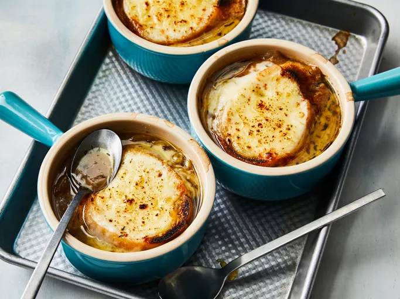

Onion Soup

Description
A simple and comforting onion soup that is perfect for a cold day. This recipe is quick and easy, requiring just a few ingredients.
Ingredients
- 4 large onions (thinly sliced)
- 4 cups beef or vegetable broth
- 2 tablespoons butter
- Salt and pepper to taste
- Baguette slices (optional)
Preparation
- Melt the butter in a large pot over medium heat and sauté the onions until caramelized (about 15 minutes).
- Add the broth to the pot and bring it to a simmer.
- Season with salt and pepper to taste and let it cook for another 10 minutes.
- Serve hot with optional toasted baguette slices.